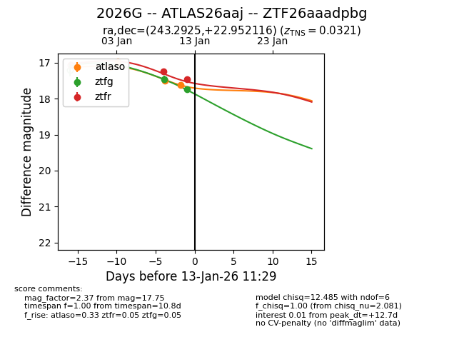
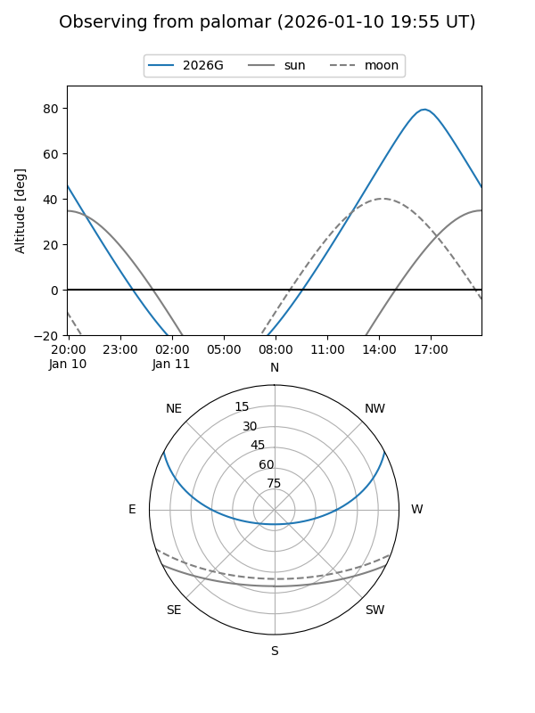
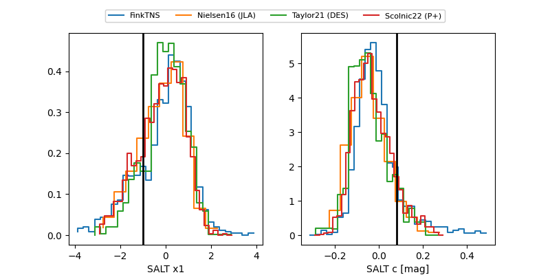

2026G
Target 2026G at 2026-01-11 15:44
Aliases and brokers:
FINK: link
Lasair: link
ALeRCE: link
TNS: link
YSE: link
alt names
ZTF26aaadpbg (ztf,fink_ztf)
2026G (tns,yse)
ATLAS26aaj (atlas)
Coordinates:
equatorial (ra, dec) = 243.2925,+22.95212
equatorial (HMS+DMS) = 16:13:10.20,+22:57:07.62
galactic (l, b) = (39.3304,+44.41413)
Flags:
confirmed ia
Photometry:
last ztfg=17.47, ztfr=17.25
1 ztfg, 1 ztfr detections
Lightcurve

Visibility


Additional plots
